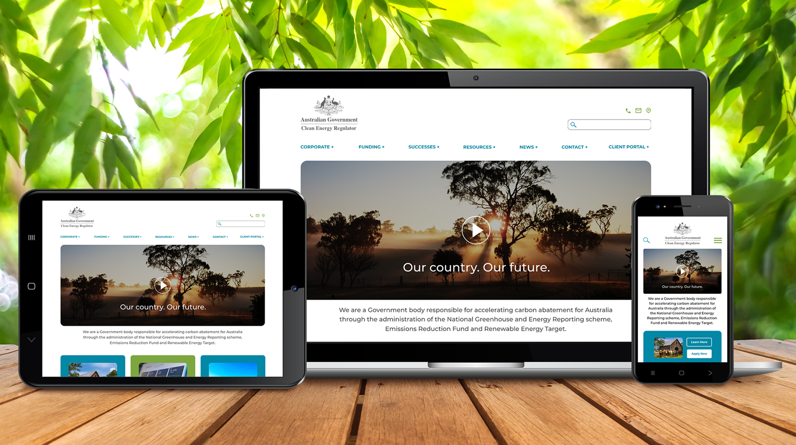

Remember that proverb, “It takes a village to raise a child?” Now if that village was a forward-thinking design team, made up of product managers, user-centred designers, developers and stakeholders… and that child was a user-centred product, created to solve problems and enhance the end-user experience, then, yes! I’d like to be part of that proverbial village raising that child.”
You say, “It takes commitment.”
I say, “I’m in – hook, line and sinker!”
Optimistic. Empathetic. Passionate. Collaborative. Flexible. 5 words used to describe me. Not just in a professional capacity, but in a personal one too. Why am I telling you this? Because I believe that many of the values we hold as a person, carry over into our work too.
Design is first and foremost my interest and passion. Design in aesthetics and thinking. That’s why no matter which avenue I explore in life, it always brings me back to this. User Experience Design has allowed me to embrace my creativity in a collaborative and meaningful way.

Australian Government Clean Energy Regulator
UI Redesign
Designing an intuitive experience for users
“Kyndli”
Mobile App Development
Connecting more donors and charitable organizations seamlessly